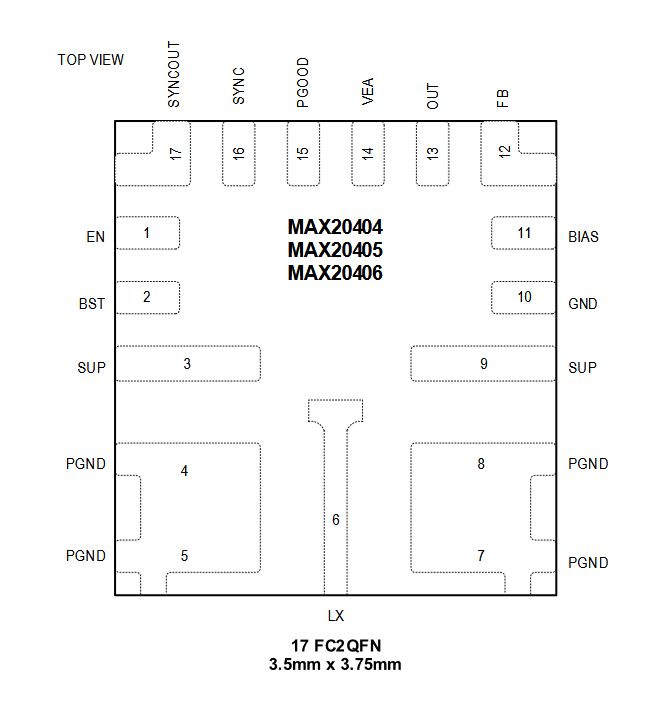
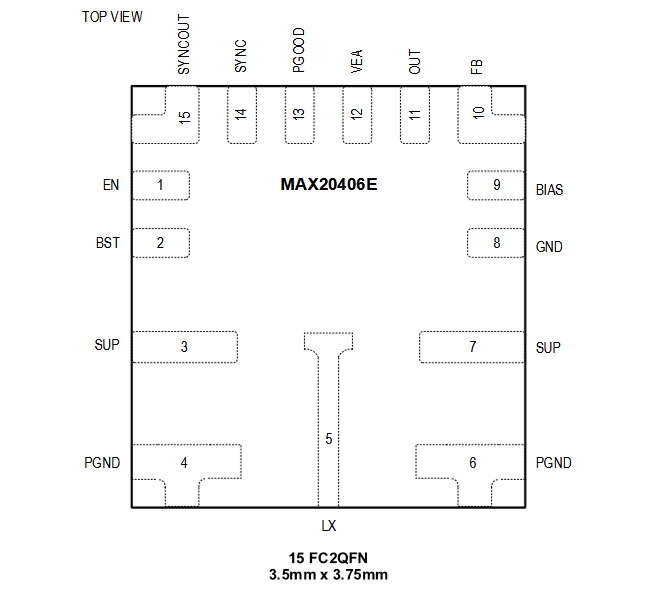
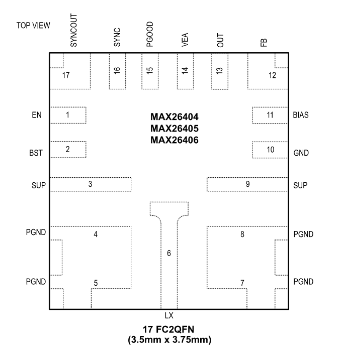

MAX20404 / MAX20405 / MAX20406

Pin Description
| PIN | NAME | FUNCTION |
|---|---|---|
| 1 | EN | High-Voltage-Compatible Input for Circuit Activation. If this pin is low, the part is off. |
| 2 | BST | High-Side Driver Supply. Connect a 0.1μF capacitor between LX and BST for proper operation. |
| 3,9 | SUP | IC Supply Input. Connect a 1μF or larger ceramic capacitor in parallel with a 4.7μF capacitor from SUP to PGND. |
| 4,5,7,8 | PGND | Power Ground. Connect all PGND pins together. |
| 6 | LX | BUCK Switching Node. High impedance when part is off. Connect LX to the switched side of the appropriate inductor. |
| 10 | GND | Analog Ground |
| 11 | BIAS | 1.8V Internal BIAS Supply. Connect a minimum of 2μF ceramic capacitor to GND. |
| 12 | FB | Feedback Pin. Connect a resistor-divider from OUT to FB to GND for external adjustment of output voltage. Connect to BIAS for internal fixed voltages. |
| 13 | OUT | Buck Regulator Output Voltage-Sense Input. Connect OUT to the buck output. |
| 14 | VEA | Internal Voltage Loop Error-Amplifier Output. Connect to VEA of the target for dual-phase operation. Leave unconnected for single-phase operation. |
| 15 | PGOOD | Open-Drain Reset Output. External pull-up required. |
| 16 | SYNC | SYNC. If connected to GND, Skip-mode operation is enabled under light loads. If connected to BIAS, forced-PWM mode is enabled. |
| 17 | SYNCOUT | 180-Degree Out-of-Phase Clock Output for Multiphase Operation. Leave SYNCOUT open for single-phase operation. |
MAX20406E

Pin Description
| PIN | NAME | FUNCTION |
|---|---|---|
| 1 | EN | High-Voltage-Compatible Input for Circuit Activation. If this pin is low, the part is off. |
| 2 | BST | High-Side Driver Supply. Connect a 0.1μF capacitor between LX and BST for proper operation. |
| 3,7 | SUP | IC Supply Input. Connect a 1μF or larger ceramic capacitor in parallel with a 4.7μF capacitor from SUP to PGND. |
| 4,6 | PGND | Power Ground. Connect all PGND pins together. |
| 5 | LX | BUCK Switching Node. High impedance when part is off. Connect LX to the switched side of the appropriate inductor. |
| 8 | GND | Analog Ground |
| 9 | BIAS | 1.8V Internal BIAS Supply. Connect a minimum of 2μF ceramic capacitor to GND. |
| 10 | FB | Feedback Pin. Connect a resistor-divider from OUT to FB to GND for external adjustment of output voltage. Connect to BIAS for internal fixed voltages. |
| 11 | OUT | Buck Regulator Output Voltage-Sense Input. Connect OUT to the buck output. |
| 12 | VEA | Internal Voltage Loop Error-Amplifier Output. Connect to VEA of the target for dual-phase operation. Leave unconnected for single-phase operation. |
| 13 | PGOOD | Open-Drain Reset Output. External pull-up required. |
| 14 | SYNC | SYNC. If connected to GND, Skip-mode operation is enabled under light loads. If connected to BIAS, forced-PWM mode is enabled. |
| 15 | SYNCOUT | 180-Degree Out-of-Phase Clock Output for Multiphase Operation. Leave SYNCOUT open for single-phase operation. |
MAX26404 / MAX26405 / MAX26406

Pin Description
| PIN | NAME | FUNCTION |
|---|---|---|
| 1 | EN | High-Voltage-Compatible Input for Circuit Activation. If this pin is low, the part is off. |
| 2 | BST | High-Side Driver Supply. Connect a 0.1μF capacitor between LX and BST for proper operation. |
| 3,9 | SUP | IC Supply Input. Connect a 1μF or larger ceramic capacitor in parallel with a 4.7μF cap from SUP to PGND. |
| 4,5,7,8 | PGND | Power Ground. Connect all PGND pins together. |
| 6 | LX | BUCK Switching Node. High impedance when part is off. Connect LX to the switched side of the appropriate inductor. |
| 10 | GND | Analog Ground. |
| 11 | BIAS | 1.8V Internal BIAS Supply. Connect a minimum of 2μF ceramic capacitor to PGND. |
| 12 | FB | Feedback Pin. Connect a resistor-divider from OUT to FB to GND for external adjustment of output voltage. Connect to BIAS for internal fixed voltages. |
| 13 | OUT | Buck Regulator Output Voltage-Sense Input. Connect OUT to the buck output. |
| 14 | VEA | Internal Voltage Loop Error-Amplifier Output. Connect to VEA of the target for dual-phase operation. Leave unconnected for single-phase operation. |
| 15 | PGOOD | Open-Drain Reset Output. External pull-up required. |
| 16 | SYNC | SYNC. If connected to GND, skip-mode operation is enabled under light loads. If connected to BIAS, forced-PWM mode is enabled. |
| 17 | SYNCOUT | 180° Out-of-Phase Clock Output for Multiphase Operation. Leave SYNCOUT open for single-phase operation. |